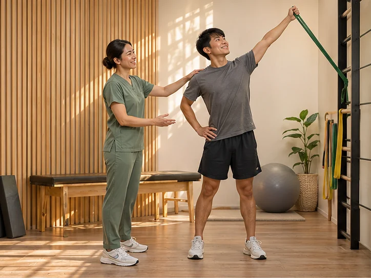
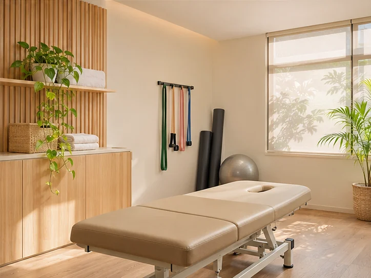

Initial assessment
A movement assessment and time to discuss what you want to get back to doing.
One-on-one physical therapy in Kapitolyo, Pasig. Get an assessment, understand your options, and leave with a plan you can follow at home.

Choose an initial assessment for your first visit. Your therapist can help you decide what type of follow-up fits your goals.
A movement assessment and time to discuss what you want to get back to doing.
Guided strength and movement sessions as you work toward returning to sport.
Practice movements for daily routines, from long hours at a desk to lifting at work.
Review your progress with your therapist and update the exercises you do between visits.
Each appointment is one-on-one. Your therapist guides you through the session and reviews any exercises you’ll take home.
Physical therapist
Mara works with people who want to move more comfortably through daily activities, including people whose work keeps them seated for long stretches.
Physical therapist
Nico focuses on sports rehabilitation and helps runners and recreational athletes plan a gradual return to training.
Choose a treatment and a time to see what a request would include. For a first visit, allow about an hour.
Wear something you can move in. If you have a referral or records relevant to your visit, bring them with you.

East Capitol Drive
Kapitolyo, Pasig City